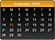
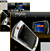
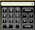
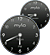
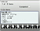
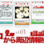

sony japan widgets
Official widgets created by Sony Japan. Source: Sony Japan's website
|  | Calendar |
|  | Slide Puzzle |
|  | Calculator |
|  | World Clock |
|  | To-Do List |
|  | Search for surrounding information from here |
SHOUTcast |
|
mixi |
|
My Contacts |
|
RSS |